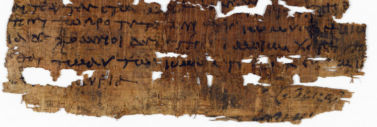
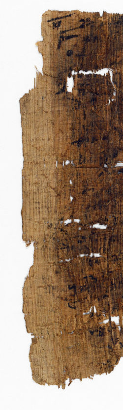
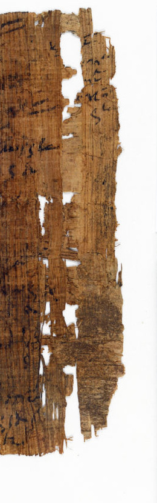

Study 01g · 11 October 2026P.Mich. inv. 6215i / margins and inference
The margin suggests
The recto's lower blank band may be a lower margin or a space between sections. On the verso, the left and right margins suggest to the authors that the sheet was cut for reuse.
Crops from the article's published figures, kept in their original orientations. Display size is not a measurement. No missing edge or earlier sheet shape is reconstructed.
01 / RectoLower band

The authors leave this space between two readings: lower margin, or a space between sections. Two upside-down lines in a different hand sit within it.
02 / VersoLeft margin

One of the two margins used in the article's suggestion.
03 / VersoRight margin

The right margin is partly filled at the top with a notation.
Recto / open reading§1
A blank with two names
The edition says the will is incomplete at the top and both sides. At the bottom, the blank area could be its lower margin or a gap between sections. The two inverted lines are in another hand, which the authors think resembles the verso.
The image shows the remaining lines and ragged paper. It cannot decide which reading of the blank is right.
Verso / material suggestion§1
Two margins suggest a cut
The article points to the left and right margins, including the notation at the upper right, as evidence that the papyrus was cut for reuse. It describes the reused writing as badly preserved through smudging or purposeful erasure.
The source calls cutting a suggestion. It does not date the act or reconstruct what the lost boundary looked like before it.
The recto's blank stays undecided. The verso's margins carry an argument.
A torn or incomplete edge is visible in the photograph; “cut for reuse” is the authors' interpretation of those margins. I can put the surface and the reading together, but the edge cannot name who changed it, when, or by what tool.
Text and figures 1–2: Maria Nowak and W. Graham Claytor, “A Local Will with a ‘Codicillary’ Clause,” Pylon 4 (2023), §1. Images courtesy of the University of Michigan Library Digital Collections; CC BY-NC-SA 4.0. Article ↗ · Full text PDF ↗
The source photographs are reproduced without color correction. Each detail is cropped from a published figure; the crop boundaries and display widths do not assert scale or a reconstructed outline.